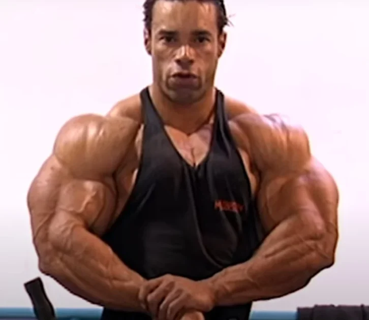

Força ou Powerlift
O treinamento de força tem como objetivo aumentar a capacidade de uma pessoa produzir força contra uma
resistência. Para isso, são utilizados exercícios com sobrecarga, como agachamento, supino e levantamento
terra,
buscando melhorar progressivamente o desempenho.
Para desenvolver força, é comum utilizar cargas elevadas, poucas repetições e períodos maiores de
descanso. Entretanto, o treinamento pode variar de acordo com o nível do praticante, objetivo e fase do
planejamento.
A evolução da força depende principalmente da progressão do treinamento. O praticante pode aumentar
gradualmente as cargas, melhorar a técnica dos movimentos e organizar o volume e a intensidade dos treinos.
A recuperação também é importante, pois permite que o organismo se adapte aos estímulos realizados.
Além do aumento da força, o treinamento pode proporcionar melhora da coordenação motora, desempenho
físico, resistência muscular e capacidade de realizar atividades que exigem produção de força.
Portanto, o treinamento voltado para força e powerlifting busca desenvolver a capacidade de produzir força
de maneira eficiente, utilizando principalmente os exercícios básicos da modalidade e uma progressão
planejada de carga, volume, intensidade e técnica.

Volume de treino e Powerlift..
No treinamento de força, o número de séries semanais pode variar bastante conforme o nível do atleta e a fase
do treinamento. Diferentemente da hipertrofia, o objetivo principal não é simplesmente aumentar o tamanho
muscular, mas melhorar a capacidade de produzir força em determinados movimentos.
No powerlifting, é comum realizar os três movimentos principais várias vezes durante a semana, utilizando
diferentes combinações de séries, repetições e cargas. Um praticante iniciante pode utilizar um volume
menor, enquanto atletas mais experientes podem precisar de um planejamento mais elaborado.
As séries também podem ser realizadas com diferentes níveis de intensidade. Por exemplo, séries de 1 a 5
repetições com cargas relativamente altas são frequentemente utilizadas para desenvolver força máxima.
Repetições mais altas também podem aparecer no treinamento para desenvolver a musculatura e aumentar a
capacidade de trabalho.
Por isso, não existe uma quantidade única de séries semanais que seja ideal para todos. O volume deve ser
ajustado de acordo com a experiência do atleta, intensidade do treinamento, recuperação e evolução do
desempenho.
Resumo: Há a realização de geralmente 5 a 7 séries nos treinos de força, visando começar uma série
de aquecimento e depois ir diminuindo as repetições com o aumento da carga, chegando a no máximo 3
repetições em uma última série, normalmente sendo apenas uma. Há também o aumento do tempo de descanso,
normalmente de 3 a 5 minutos.

Melhores Exercícios
| Movimento | Exercício Principal | Objetivo |
|---|---|---|
| Agachamento | Agachamento com barra | Desenvolver força principalmente em pernas e quadril |
| Supino | Supino Reto com Barra | Desenvolver força de peito, ombros e tríceps |
| Levantamento terra | Deadlift | Desenvolver força principalmente em costas, quadril e pernas |
*No powerlifting, é comum realizar os três movimentos principais várias vezes durante a semana, utilizando diferentes combinações de séries, repetições e cargas. Um praticante iniciante pode utilizar um volume menor, enquanto atletas mais experientes podem precisar de um planejamento mais elaborado.